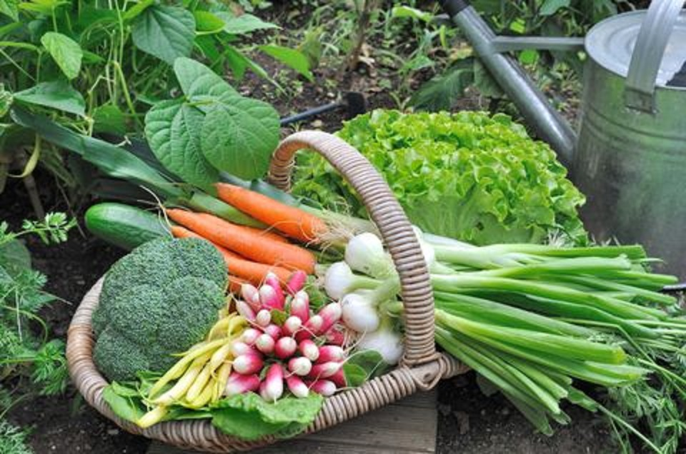
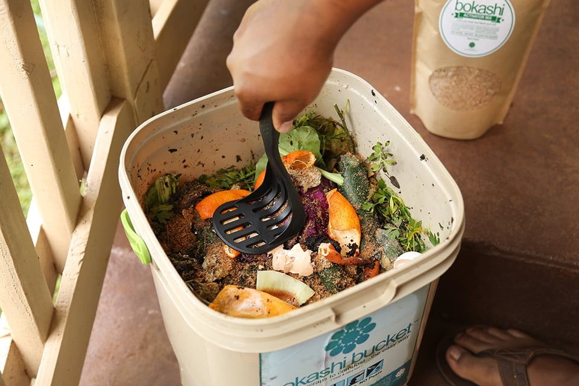

If you do composting, you don't have to throw out vegetable waste.
Easy and inexpensive nutrient-rich fertilizer for your garden
Less convenient, but possible with compost containers.
Use for office and house plants.
| Brown (2-3 parts) | Green (1 part) |
|---|---|
| Shredded paper, soiled paper, but not shiny paper | Vegetable scraps and egg shells |
| Cardboard (chop it into pieces) / hair / nails / lint | Grass clippings |
| Leaves, twigs, cotton fabric | Coffee grounds, tea bags |